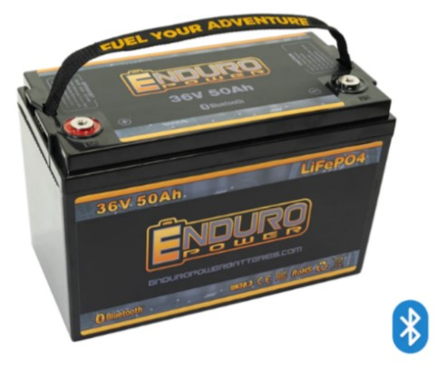

LOUIS Project - Maintenance Instructions
Maintenance Instructions
Brush
When to Replace:
- For reference, it was first used in February of 2025.
- As a general rule of thumb, the brush should be replaced every 6-12 months.
- OR if there are worn, damaged, or frayed bristles, consider replacing the brush to minimize damage to the solar panel.
- OR if the brush does not effectively remove debris, consider replacing the brush to maximize the solar panel’s efficiency.
Maintenance Tips:
- Every week, check the brush for debris buildup, especially after heavy usage.
- Clean it whenever you notice significant buildup.
How to Clean the Brush:
- Rinse with water, preferably demineralized.
- If needed, use a mild, non-abrasive detergent and a soft cloth.
- Allow the brush to dry completely before reattaching.
- Make sure to check for worn bristles that may scratch the solar panel.
Motors:

When to Replace:
- For reference, it was first used in February of 2025.
- As a general rule of thumb, the motors should be replaced every 4-6 years.
- OR if there are signs of failure, such as:
- Losing torque or skipping steps
- Excessive noise
- Frequent overheating during normal operation
- Visible damage
Maintenance Tips:
- Lubricate the bearings and rails.
- Ensure proper alignment and mounting.
- Check for debris buildup and clean accordingly.
- Check the wiring and connections for wear or corrosion.
- Re-spray the Electro-Seal formula every 2 years when the rover is powered-off.
Tires
When to Replace:
- For reference, it was first used in February of 2024.
- As a general rule of thumb, replace these tires every 2-3 years.
- OR if you notice the following elements, replace accordingly:
- Tread wear
- Visible damage, such as cracks or splits
- Deformation
Maintenance Tips:
- Inspect monthly and clean after use on rough terrains using water and a mild soap.
- Check for embedded rocks, cracks, sharp objects, or signs of UV damage.
- Avoid overloading, which may cause deformation.
- Store LOUIS in a cool, shaded area.
Solar Panel

When to Replace:
- For reference, it was first used in February of 2025.
- As a general rule of thumb, replace every 20-25 years.
- OR whenever the efficiency drops to below 80%.
- Most panels degrade at a 0.5%-1% per year, so keep this in mind.
- OR you notice physical damage such as:
- Cracks or chips
- Delamination
- Hot spots
- OR there are electrical failures such as:
- Loose or corroded wiring
- Other malfunctions
Maintenance Tips:
- For stubborn dirt or debris that the cleaning system cannot remove, use a mild soap solution or 70:30 IPA-water mix (if needed).
- Conduct routine inspections every 6 months.
Charge Controller:
When to Replace:
- For reference, it was first used in February of 2025.
- As a general rule of thumb, replace every 10-15 years.
- OR if you notice the following:
- The power output drops significantly
- Overheating/burn marks
- Persistent error/fault codes
- Battery over/undercharging
- Physical/water damage
Maintenance Tips:
- Conduct routine inspections every 3-6 months checking for:
- Physical damage
- Loose or frayed wiring
- Signs of overheating
- Dust buildup
- Output voltage
- Battery charging patterns
- If there is dust buildup, clean using compressed air.
Arduino:
When to Replace:
- For reference, it was first used in February of 2025.
- As a general rule of thumb, replace every 5-10 years.
- OR when the following conditions exist:
- Unresponsiveness
- Failure to upload
- Burnt components
- Unstable performance
- Physical damage
- Insufficient performance
Maintenance Tips:
- Check every 3-6 months for any damage.
Battery:

When to Replace:
- For reference, it was first used in February of 2024.
- As a general rule of thumb, replace every 5-10 years.
- OR when the following exists:
- Reduced capacity
- Overheating
- Charging issues
- Swelling
- Physical damage
- Frequent shut-downs of LOUIS
Maintenance Tips:
- Keep charge levels between 20%-80%.
- Store at 50% charge if it will not be used for a long period of time.
- Check terminals for corrosion every 3-6 months.
- If there is corrosion, clean with baking soda and water.
- Ensure tightness of connections.
- Monitor its performance via the Enduro App.
Camera:
When to Replace:
- For reference, it was first used in February of 2024.
- As a general rule of thumb, replace every 5-7 years.
- OR if you notice the following:
- Blurry or low quality video
- Frequent connection issues
- Laggy or choppy video
- Physical damage
Maintenance Tips:
- Use a microfiber cloth to gently wipe the lens every 1-2 weeks.